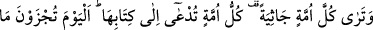

33. Yaptıklarının kötülükleri onlara görünmüş, alay edip durdukları şey onları
kuşatmıştır.
34. Denilir ki: Bu güne kavuşacağınızı unuttuğunuz gibi biz de bugün sizi
unuturuz. Yeriniz ateştir, yardımcılarınız da yoktur!
35. Bunun böyle olmasının sebebi şudur: Siz Allah’ın âyetlerini alaya aldınız,
dünya hayatı sizi aldattı. Artık bugün ateşten çıkarılmayacaklardır ve onların
(Allah’ı) hoşnut etmeleri de istenmeyecektir.
36. Hamd, göklerin Rabbi, yerin Rabbi bütün âlemlerin Rabbi olan Allah’a
mahsustur.
37. Göklerde ve yerde azamet yalnız O’nundur. O, azîzdir, hakîmdir.
“Göklerin ve yerin mülkü,” mutlak mülk, küllî tasarruf, gökte, yerde ve
arasındakilerde, yalnız “Allah’ındır.” Bu ifâde, kudreti tahsisten sonra genellemedir.
“Kıyâmetin kopacağı gün var ya, işte o gün bâtıla sapanlar” hakkı iptal edip
dirilişi yalanlayanlar “hüsrana uğrayacaktır,” hüsranları o gün ortaya çıkacaktır.
Buradaki “yevme” kelimesinde âmil “
” fiilidir. “
” kelimesi ondan bedeldir.
Allâme Taftâzâni şöyle demiştir: Âyette geçen “yevme” kelimesi vakit mânâsındadır.
Burada kıyâmetin kopuş vakti kastedilmiştir. İşte o zaman ölüler diriltilip haşr olacaktır.
Bu vakit kıyâmetin kopuş vaktinin bir parçasıdır. Çünkü kıyâmet vakti İsrafil (a.s.)’ın
sûra ilk üfürmesiyle başlayan geniş bir zaman dilimidir. “Bâtıla sapanların hüsranları
haşr günü ortaya çıkacaktır.” Müftî Sa’dî’nin Havâşî’sinde böyledir.
“
” denilir ki “bâtılı getirdi ve gerçek dışı bir şey söyledi” demektir. Bâtıla
sapanlardan murad, “hakkı iptale çalışıp dirilişi inkâr ve tekzip edenlerdir.” “O gün
bâtıla sapanlar hüsrana uğrayacaklar” ifâdesi “onların hüsranları o gün ortaya çıkacak”
demektir. Yoldan çıkmış fâsık ve azgınlar zarar ederler. Onların zarar etmesi ise
yeniden cehenneme girmeleridir.
Tefsîr-i Kebîr’de şöyle denilmiştir: “Elbette hayat, akıl ve sağlık ana sermayedir.
Âhiret mutluluğunu elde etmek için bunlarda tasarruf etmek tüccarın kâr ve kazanç
maksadıyla sermayede tasarruf etmesi gibidir. Kâfirler kendilerini dünyayı taleb etmede
yorup âhiret kazancında zarar ve ziyan çekmişlerdir. Burada fıtrî kabiliyeti iptale işâret
edilmektedir.
Mısra:
Ömrünü zâyî eden kendine ağlasın.